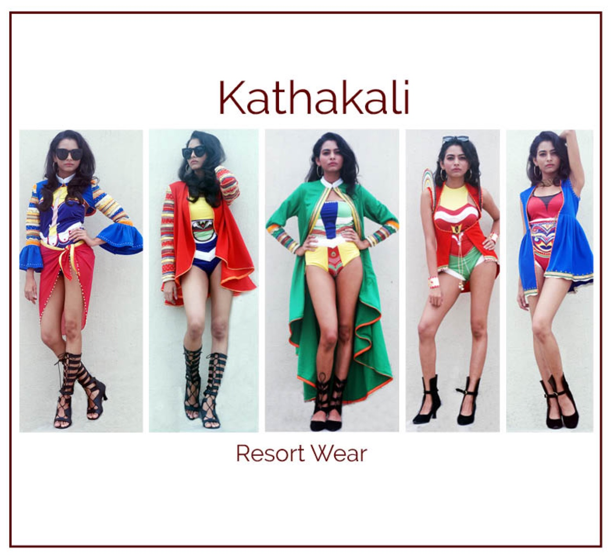
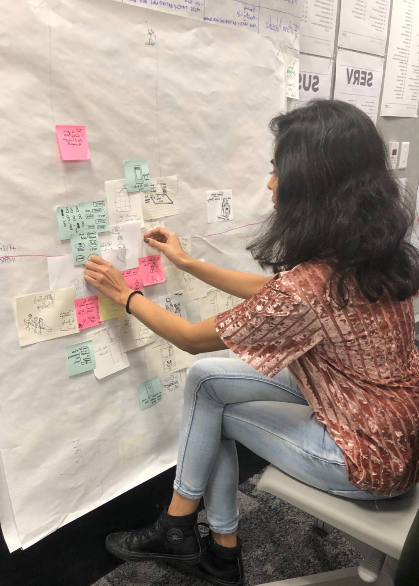
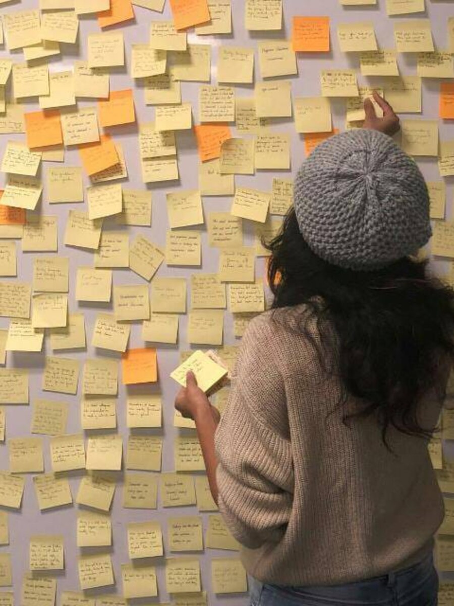
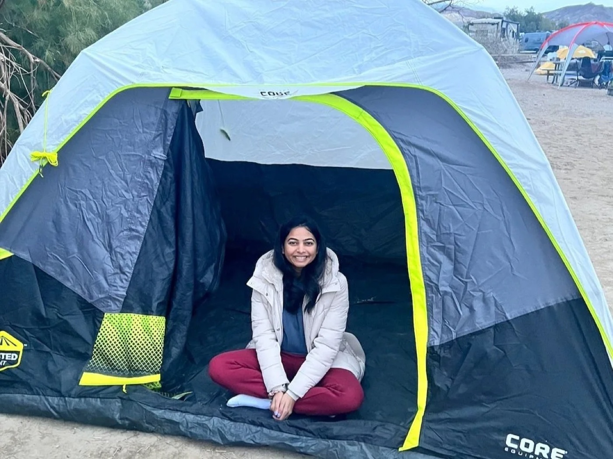
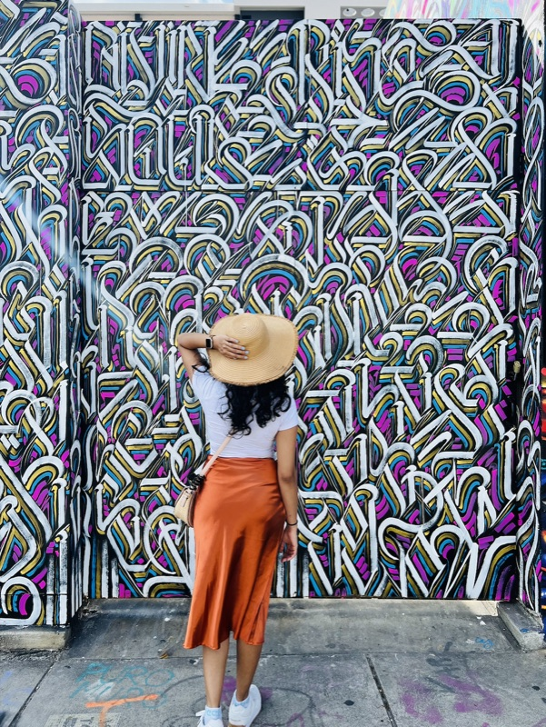
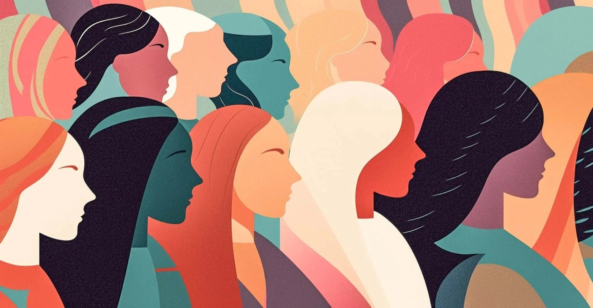
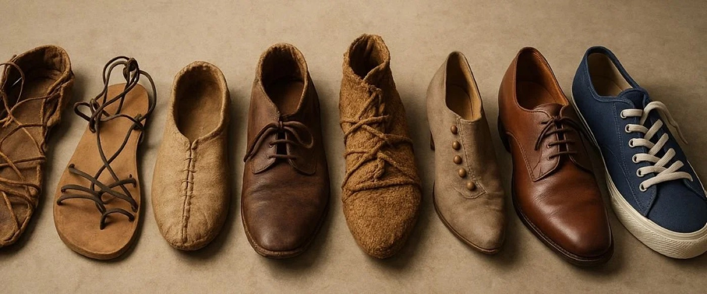

Empowering Women Leaders in Design
Exploring the gender gap in design leadership — ten success principles, inspiring women, and a tool to guide emerging leaders.
Read the article ↗Curious by training, creative by nature. A Senior UX Researcher growing into design — 6+ years of asking the right questions, and increasingly, answering them visually. Before research, I was a knitwear designer, a painter, and a kid who turned scraps into something useful.
My path to UX started long before my first wireframe. As a kid, I loved transforming discarded scraps into something useful — a “best out of waste” mindset I still carry into every project.

02I studied knitwear design at the National Institute of Fashion Technology — building collections like the Kathakali resort wear line and The Indian Essence from research, story, and craft.

03A master’s in design management at the Savannah College of Art and Design pulled me from making things toward understanding the people and systems around them.

04I’ve led generative and evaluative research across fintech, healthcare, and enterprise platforms. I got tired of handing off insights and watching the “so what?” get lost — so I started designing too.
Senior UX Researcher & Designer in San Francisco — making research feel accessible to the whole team, building genuine trust with participants, and crafting experiences that earn their place in someone’s day.
Paintings, sketches, fashion illustration and collections — the creative muscle behind the research.
Drawn to the world’s hidden corners — and to the quiet moments that keep me grounded and creative.

Chasing unexpected adventures, always looking for what might inspire me next.
I recharge through meditation — it keeps me grounded, even on the busiest days.



Exploring the gender gap in design leadership — ten success principles, inspiring women, and a tool to guide emerging leaders.
Read the article ↗
Tracing the evolution of footwear from ancient origins to future trends — framing shoes as complex adaptive systems shaped by culture and technology.
Read the paper ↗Kshanika constantly demonstrates strong expertise in methodology development, stakeholder communication, research moderation, synthesis, and presentation of actionable insights — all executed with precision and professionalism. She is a trusted partner and invaluable asset to the team.TJ
Kshanika is dedicated, focused, and creative. She combines methodological rigor with the ability to quickly pivot, turning complex qualitative data into clear direction to inform strategy and design. I highly recommend her to any team looking for a strategic, impactful researcher.LP
Kshanika is a thoughtful, methodical researcher with a rigorous process that uncovers great insights. She is also a visual designer in her own right who can build designs to use in her own research. On top of that, she’s easy to work with, reliable, and fun to be around!BR
Kshanika was a super valuable member of our team and helped support on every level — always meeting or exceeding expectations in preparation, facilitation, and deliverables. Her “can do attitude” was invaluable and greatly appreciated by everyone who worked with her.JP
Hiring, collaborating, or just want to connect — reach out.